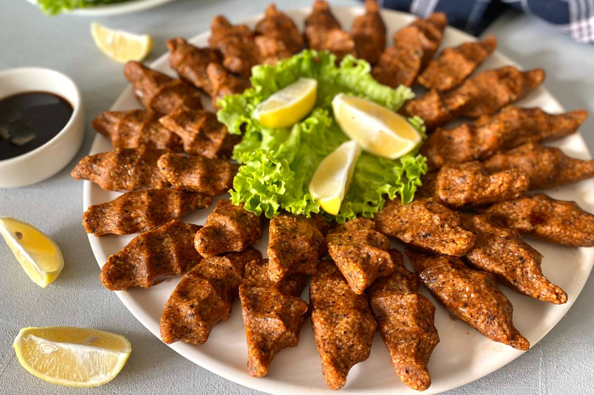

Çiğ köfte is the Turkish version of steak tartare, traditionally made with high-quality ground raw beef (or lamb) that is combined with tomatoes, onions, garlic, pepper, and a selection of Turkish spices. The dish is consumed as a meze, and it is typically served almost cold.
Meal prep time : 1 hour
Servings : 6